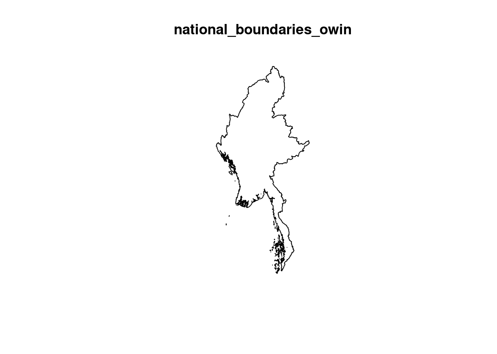
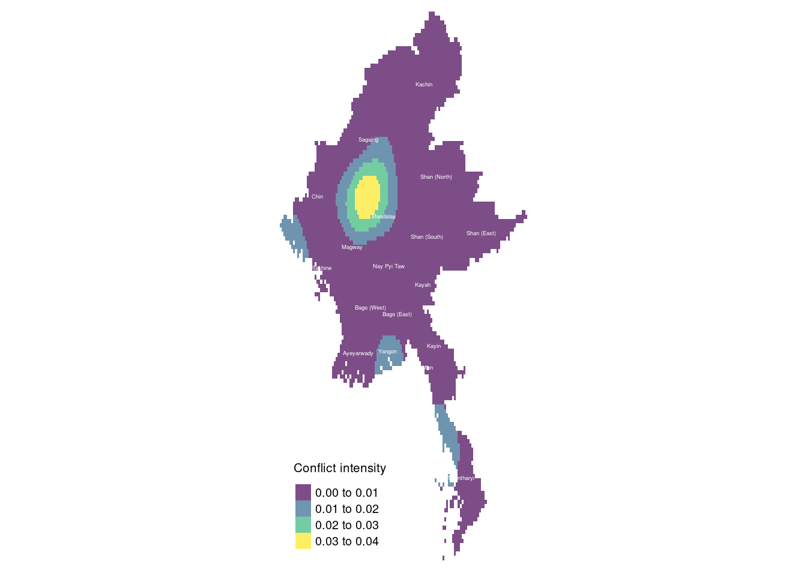
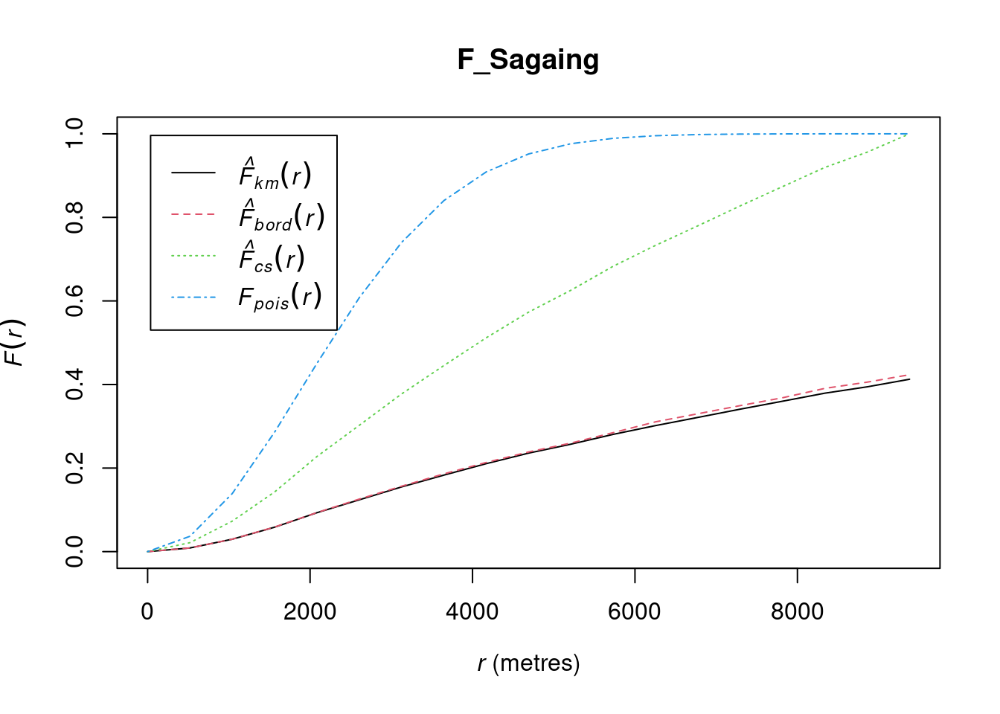

pacman::p_load(sf, tidyverse, tmap, spatstat, raster)Take Home Exercise 1
Geospatial analytics offer valuable insights into the patterns of armed conflict, enabling better understanding and response strategies. This study focuses on armed conflict events in Myanmar from January 2021 to June 2024, using data from the Armed Conflict Location & Event Data (ACLED) project. The analysis examines the spatial and temporal distribution of four key event types: Battles, Explosion/Remote Violence, Strategic Developments, and Violence Against Civilians. By investigating quarterly data, this study aims to reveal patterns in the conflict, contributing to a deeper understanding of the ongoing violence in Myanmar.
To start off, let’s begin by importing all the necessary libraries:
Now that we have done so, let’s load the necessary combat data from ACLED (note that due to API limitations I am only able to get data from a certain starting date):
conflict_data <- read_csv("data/2021-08-31-2024-06-30-Myanmar.csv")Rows: 41275 Columns: 31
── Column specification ────────────────────────────────────────────────────────
Delimiter: ","
chr (20): event_id_cnty, event_date, disorder_type, event_type, sub_event_ty...
dbl (11): year, time_precision, inter1, inter2, interaction, iso, latitude, ...
ℹ Use `spec()` to retrieve the full column specification for this data.
ℹ Specify the column types or set `show_col_types = FALSE` to quiet this message.list(conflict_data)[[1]]
# A tibble: 41,275 × 31
event_id_cnty event_date year time_precision disorder_type event_type
<chr> <chr> <dbl> <dbl> <chr> <chr>
1 MMR64313 30 June 2024 2024 1 Political violence Battles
2 MMR64320 30 June 2024 2024 1 Political violence Battles
3 MMR64321 30 June 2024 2024 1 Political violence Battles
4 MMR64322 30 June 2024 2024 1 Strategic develop… Strategic…
5 MMR64323 30 June 2024 2024 1 Political violence Battles
6 MMR64324 30 June 2024 2024 1 Strategic develop… Strategic…
7 MMR64325 30 June 2024 2024 1 Political violence Battles
8 MMR64326 30 June 2024 2024 1 Political violence Battles
9 MMR64328 30 June 2024 2024 1 Political violence Battles
10 MMR64330 30 June 2024 2024 1 Political violence Battles
# ℹ 41,265 more rows
# ℹ 25 more variables: sub_event_type <chr>, actor1 <chr>, assoc_actor_1 <chr>,
# inter1 <dbl>, actor2 <chr>, assoc_actor_2 <chr>, inter2 <dbl>,
# interaction <dbl>, civilian_targeting <chr>, iso <dbl>, region <chr>,
# country <chr>, admin1 <chr>, admin2 <chr>, admin3 <chr>, location <chr>,
# latitude <dbl>, longitude <dbl>, geo_precision <dbl>, source <chr>,
# source_scale <chr>, notes <chr>, fatalities <dbl>, tags <chr>, …We have the latitude and longitude of event locations. We need to convert them into SFOs such that we can work with them using the sf library. Additionally, we need to normalise the dates such that they are all standardised into the same format that is computer readable.
conflict_data <- conflict_data %>% st_as_sf(coords = c("longitude", "latitude"), crs = 4326) %>% st_transform(crs = 32647) %>% mutate(event_date = dmy(event_date))
list(conflict_data)[[1]]
Simple feature collection with 41275 features and 29 fields
Geometry type: POINT
Dimension: XY
Bounding box: xmin: -208804.4 ymin: 1103500 xmax: 640934.5 ymax: 3042960
Projected CRS: WGS 84 / UTM zone 47N
# A tibble: 41,275 × 30
event_id_cnty event_date year time_precision disorder_type event_type
* <chr> <date> <dbl> <dbl> <chr> <chr>
1 MMR64313 2024-06-30 2024 1 Political violence Battles
2 MMR64320 2024-06-30 2024 1 Political violence Battles
3 MMR64321 2024-06-30 2024 1 Political violence Battles
4 MMR64322 2024-06-30 2024 1 Strategic developme… Strategic…
5 MMR64323 2024-06-30 2024 1 Political violence Battles
6 MMR64324 2024-06-30 2024 1 Strategic developme… Strategic…
7 MMR64325 2024-06-30 2024 1 Political violence Battles
8 MMR64326 2024-06-30 2024 1 Political violence Battles
9 MMR64328 2024-06-30 2024 1 Political violence Battles
10 MMR64330 2024-06-30 2024 1 Political violence Battles
# ℹ 41,265 more rows
# ℹ 24 more variables: sub_event_type <chr>, actor1 <chr>, assoc_actor_1 <chr>,
# inter1 <dbl>, actor2 <chr>, assoc_actor_2 <chr>, inter2 <dbl>,
# interaction <dbl>, civilian_targeting <chr>, iso <dbl>, region <chr>,
# country <chr>, admin1 <chr>, admin2 <chr>, admin3 <chr>, location <chr>,
# geo_precision <dbl>, source <chr>, source_scale <chr>, notes <chr>,
# fatalities <dbl>, tags <chr>, timestamp <dbl>, geometry <POINT [m]>Now that we have the armed conflict data, let’s import the administrative boundary data:
boundaries <- st_read("data", layer = "mmr_polbnda2_adm1_250k_mimu_1")Reading layer `mmr_polbnda2_adm1_250k_mimu_1' from data source
`/home/tropicbliss/GitHub/quarto-project/Take-home_Ex/Take-home_Ex01/data'
using driver `ESRI Shapefile'
Simple feature collection with 18 features and 6 fields
Geometry type: MULTIPOLYGON
Dimension: XY
Bounding box: xmin: 92.1721 ymin: 9.696844 xmax: 101.17 ymax: 28.54554
Geodetic CRS: WGS 84st_crs(boundaries)Coordinate Reference System:
User input: WGS 84
wkt:
GEOGCRS["WGS 84",
DATUM["World Geodetic System 1984",
ELLIPSOID["WGS 84",6378137,298.257223563,
LENGTHUNIT["metre",1]]],
PRIMEM["Greenwich",0,
ANGLEUNIT["degree",0.0174532925199433]],
CS[ellipsoidal,2],
AXIS["latitude",north,
ORDER[1],
ANGLEUNIT["degree",0.0174532925199433]],
AXIS["longitude",east,
ORDER[2],
ANGLEUNIT["degree",0.0174532925199433]],
ID["EPSG",4326]]This is currently in WGS84, and we need to convert it into a projected coordinate system so we can work with the data.
boundaries <- boundaries %>% st_transform(crs = 32647)
st_crs(boundaries)Coordinate Reference System:
User input: EPSG:32647
wkt:
PROJCRS["WGS 84 / UTM zone 47N",
BASEGEOGCRS["WGS 84",
ENSEMBLE["World Geodetic System 1984 ensemble",
MEMBER["World Geodetic System 1984 (Transit)"],
MEMBER["World Geodetic System 1984 (G730)"],
MEMBER["World Geodetic System 1984 (G873)"],
MEMBER["World Geodetic System 1984 (G1150)"],
MEMBER["World Geodetic System 1984 (G1674)"],
MEMBER["World Geodetic System 1984 (G1762)"],
MEMBER["World Geodetic System 1984 (G2139)"],
MEMBER["World Geodetic System 1984 (G2296)"],
ELLIPSOID["WGS 84",6378137,298.257223563,
LENGTHUNIT["metre",1]],
ENSEMBLEACCURACY[2.0]],
PRIMEM["Greenwich",0,
ANGLEUNIT["degree",0.0174532925199433]],
ID["EPSG",4326]],
CONVERSION["UTM zone 47N",
METHOD["Transverse Mercator",
ID["EPSG",9807]],
PARAMETER["Latitude of natural origin",0,
ANGLEUNIT["degree",0.0174532925199433],
ID["EPSG",8801]],
PARAMETER["Longitude of natural origin",99,
ANGLEUNIT["degree",0.0174532925199433],
ID["EPSG",8802]],
PARAMETER["Scale factor at natural origin",0.9996,
SCALEUNIT["unity",1],
ID["EPSG",8805]],
PARAMETER["False easting",500000,
LENGTHUNIT["metre",1],
ID["EPSG",8806]],
PARAMETER["False northing",0,
LENGTHUNIT["metre",1],
ID["EPSG",8807]]],
CS[Cartesian,2],
AXIS["(E)",east,
ORDER[1],
LENGTHUNIT["metre",1]],
AXIS["(N)",north,
ORDER[2],
LENGTHUNIT["metre",1]],
USAGE[
SCOPE["Navigation and medium accuracy spatial referencing."],
AREA["Between 96°E and 102°E, northern hemisphere between equator and 84°N, onshore and offshore. China. Indonesia. Laos. Malaysia - West Malaysia. Mongolia. Myanmar (Burma). Russian Federation. Thailand."],
BBOX[0,96,84,102]],
ID["EPSG",32647]]A horrifying amount, most of which seems to be clustered at the interior of Myanmar. Let’s overlay an administrative district map to see where most of them are all located at:
tmap_mode('plot')ℹ tmap mode set to "plot".map1 <- tm_shape(boundaries) +
tm_fill() +
tm_borders() +
tm_text("ST", size = 0.2, col = "blue")
map2 <- tm_shape(boundaries) +
tm_fill() +
tm_borders() +
tm_shape(conflict_data) +
tm_dots()
tmap_arrange(map1, map2, ncol = 2)
Quarterly KDE analysis
Now we are going to apply Kernel Density Estimation (KDE) to conflict events for each quarter of the year. These layers show the density of events over a geographic area, which can help visualize how the concentration of those events changes over time, particularly on a quarterly basis. However, to do that we need to choose an appropriate year to observe the by-quarterly results. After much deliberation I have chose 2022 as the best year for this, and here’s why:
The coup started in February 2021. While it might be interesting to analyse the slow growth in conflicts over time, the data is not representative of the Myanmar conflict as a whole.
In 2022, the political and military landscape had largely stabilized after the initial shock of the coup in 2021. The armed resistance led by various ethnic armed organizations (EAOs) and the People’s Defense Forces (PDFs) was more organized and widespread.
Data extraction and filtering
Extracting conflict data by quarter:
conflict_data_2022_q1 <- conflict_data %>% filter(event_date >= as.Date("2022-01-01") & event_date <= as.Date("2022-03-31"))
conflict_data_2022_q2 <- conflict_data %>% filter(event_date >= as.Date("2022-04-01") & event_date <= as.Date("2022-06-30"))
conflict_data_2022_q3 <- conflict_data %>% filter(event_date >= as.Date("2022-07-01") & event_date <= as.Date("2022-09-30"))
conflict_data_2022_q4 <- conflict_data %>% filter(event_date >= as.Date("2022-10-01") & event_date <= as.Date("2022-12-31"))Data conversion
::: {.callout-note}
The bandwidth in the context of KDE is a critical parameter that determines the level of smoothing applied to the data when estimating the density. It controls how much each data point influences the estimate of the density around it.
:::conflict_data_2022_q1_ppp <- as.ppp(conflict_data_2022_q1)Warning in as.ppp.sf(conflict_data_2022_q1): only first attribute column is
used for marksconflict_data_2022_q2_ppp <- as.ppp(conflict_data_2022_q2)Warning in as.ppp.sf(conflict_data_2022_q2): only first attribute column is
used for marksconflict_data_2022_q3_ppp <- as.ppp(conflict_data_2022_q3)Warning in as.ppp.sf(conflict_data_2022_q3): only first attribute column is
used for marksconflict_data_2022_q4_ppp <- as.ppp(conflict_data_2022_q4)Warning in as.ppp.sf(conflict_data_2022_q4): only first attribute column is
used for marksplot(conflict_data_2022_q1_ppp)Warning in default.charmap(ntypes, chars): Too many types to display every type
as a different characterWarning: Only 10 out of 4267 symbols are shown in the symbol map
summary(conflict_data_2022_q1_ppp)Marked planar point pattern: 4267 points
Average intensity 2.785283e-09 points per square unit
Coordinates are given to 13 decimal places
marks are of type 'character'
Summary:
Length Class Mode
4267 character character
Window: rectangle = [-204784, 591875.9] x [1103500.1, 3026504.9] units
(796700 x 1923000 units)
Window area = 1.53198e+12 square unitsMany statistical methods in spatial point pattern analysis are based on the assumption that the underlying point process is simple. A simple point process means that no two points in the process can occupy the exact same location (i.e., they cannot be coincident).
If points are coincident, this assumption is violated, and the statistical methods that rely on this assumption may produce invalid or misleading results.
Thus, let’s check if there are any duplicate points:
any(duplicated(conflict_data_2022_q1_ppp))[1] FALSEany(duplicated(conflict_data_2022_q2_ppp))[1] FALSEany(duplicated(conflict_data_2022_q3_ppp))[1] FALSEany(duplicated(conflict_data_2022_q4_ppp))[1] FALSEAs you can see, there doesn’t seem to be any duplicated data points.
Next, we need to create an owin object. This helps to confine the analysis within a specific geographical area.
boundaries_owin <- as.owin(boundaries)plot(boundaries_owin)As, you can see, the owin object contains state boundaries, which we don’t need. We need to find a way to dissolve those state boundaries.
myanmar_sf <- st_union(boundaries)plot(myanmar_sf)Still not that good. Luckily the website also contain geographical data that does not include state lines.
national_boundaries <- st_read("data", layer = "mmr_polbnda_adm0_250k_mimu_1") %>% st_transform(crs = 32647)Reading layer `mmr_polbnda_adm0_250k_mimu_1' from data source
`/home/tropicbliss/GitHub/quarto-project/Take-home_Ex/Take-home_Ex01/data'
using driver `ESRI Shapefile'
Simple feature collection with 1 feature and 2 fields
Geometry type: MULTIPOLYGON
Dimension: XY
Bounding box: xmin: 92.1721 ymin: 9.696844 xmax: 101.17 ymax: 28.54554
Geodetic CRS: WGS 84st_crs(boundaries)Coordinate Reference System:
User input: EPSG:32647
wkt:
PROJCRS["WGS 84 / UTM zone 47N",
BASEGEOGCRS["WGS 84",
ENSEMBLE["World Geodetic System 1984 ensemble",
MEMBER["World Geodetic System 1984 (Transit)"],
MEMBER["World Geodetic System 1984 (G730)"],
MEMBER["World Geodetic System 1984 (G873)"],
MEMBER["World Geodetic System 1984 (G1150)"],
MEMBER["World Geodetic System 1984 (G1674)"],
MEMBER["World Geodetic System 1984 (G1762)"],
MEMBER["World Geodetic System 1984 (G2139)"],
MEMBER["World Geodetic System 1984 (G2296)"],
ELLIPSOID["WGS 84",6378137,298.257223563,
LENGTHUNIT["metre",1]],
ENSEMBLEACCURACY[2.0]],
PRIMEM["Greenwich",0,
ANGLEUNIT["degree",0.0174532925199433]],
ID["EPSG",4326]],
CONVERSION["UTM zone 47N",
METHOD["Transverse Mercator",
ID["EPSG",9807]],
PARAMETER["Latitude of natural origin",0,
ANGLEUNIT["degree",0.0174532925199433],
ID["EPSG",8801]],
PARAMETER["Longitude of natural origin",99,
ANGLEUNIT["degree",0.0174532925199433],
ID["EPSG",8802]],
PARAMETER["Scale factor at natural origin",0.9996,
SCALEUNIT["unity",1],
ID["EPSG",8805]],
PARAMETER["False easting",500000,
LENGTHUNIT["metre",1],
ID["EPSG",8806]],
PARAMETER["False northing",0,
LENGTHUNIT["metre",1],
ID["EPSG",8807]]],
CS[Cartesian,2],
AXIS["(E)",east,
ORDER[1],
LENGTHUNIT["metre",1]],
AXIS["(N)",north,
ORDER[2],
LENGTHUNIT["metre",1]],
USAGE[
SCOPE["Navigation and medium accuracy spatial referencing."],
AREA["Between 96°E and 102°E, northern hemisphere between equator and 84°N, onshore and offshore. China. Indonesia. Laos. Malaysia - West Malaysia. Mongolia. Myanmar (Burma). Russian Federation. Thailand."],
BBOX[0,96,84,102]],
ID["EPSG",32647]]national_boundaries_owin <- as.owin(national_boundaries)plot(national_boundaries_owin)
That’s much better. We simply need to combine the ppp and the owin objects.
conflictMYQ1_ppp <- conflict_data_2022_q1_ppp[national_boundaries_owin]
conflictMYQ2_ppp <- conflict_data_2022_q2_ppp[national_boundaries_owin]
conflictMYQ3_ppp <- conflict_data_2022_q3_ppp[national_boundaries_owin]
conflictMYQ4_ppp <- conflict_data_2022_q4_ppp[national_boundaries_owin]plot(conflictMYQ1_ppp)Warning in default.charmap(ntypes, chars): Too many types to display every type
as a different characterWarning: Only 10 out of 4267 symbols are shown in the symbol map
crs_info <- st_crs(national_boundaries)
unit_of_measurement <- crs_info$units
print(unit_of_measurement)[1] "m"First, we need to convert the unit of measurement to kilometres since the density values would be too small to comprehend.
conflictMYQ1_ppp.km <- rescale.ppp(conflictMYQ1_ppp, 1000, "km")
conflictMYQ2_ppp.km <- rescale.ppp(conflictMYQ2_ppp, 1000, "km")
conflictMYQ3_ppp.km <- rescale.ppp(conflictMYQ3_ppp, 1000, "km")
conflictMYQ4_ppp.km <- rescale.ppp(conflictMYQ4_ppp, 1000, "km")Working with different bandwidth methods
bw.CvL(conflictMYQ1_ppp.km) sigma
66.96841 bw.scott(conflictMYQ1_ppp.km) sigma.x sigma.y
33.58016 77.84496 bw.ppl(conflictMYQ1_ppp.km) sigma
4.298156 bw.diggle(conflictMYQ1_ppp.km) sigma
0.2187043 The sigma values for bw.diggle and bw.ppl seem way too small. A small sigma value might result in sudden spikes of the data over an extremely small area, which would not be useful when analysing such a large geographical area. Since the conflict data contains regions where points seem to be highly clustered, an automatic bandwidth selection method might select a smaller sigma to capture the fine structure in those areas. This can lead to undersmoothing across the entire dataset, making the density plot appear as many small bright spots with abrupt transitions.
kde_conflictMYQ1_scott <- density(conflictMYQ1_ppp.km, sigma=bw.scott, edge=TRUE, kernel="quartic")Warning in density.ppp(conflictMYQ1_ppp.km, sigma = bw.scott, edge = TRUE, :
Bandwidth selection will be based on Gaussian kernelkde_conflictMYQ1_CvL <- density(conflictMYQ1_ppp.km, sigma=bw.scott, edge=TRUE, kernel="quartic")Warning in density.ppp(conflictMYQ1_ppp.km, sigma = bw.scott, edge = TRUE, :
Bandwidth selection will be based on Gaussian kernelpar(mfrow=c(1,2))
plot(kde_conflictMYQ1_scott, main = "bw.scott")
plot(kde_conflictMYQ1_CvL, main = "bw.CvL")From trial and error, it seems like bw.scott is the best fit for our use case.
The edge parameter controls whether edge correction should be applied. Edge correction accounts for the fact that points near the boundaries of the observation window have fewer neighbors and, without correction, could lead to underestimation of density near the edges.Setting edge = TRUE ensures that edge correction is applied, which adjusts the density estimate near the borders to compensate for this bias.
To avoid negative intensity values, for kernel methods I will choose "quartic".
Plotting our results
Since we are analysing the same geographical area over a period of time, and we want to apply the same amount of smoothing, I am going to use the sigma value derived from the first quarter using bw.scott and apply it to all quarters.
kde_sigma <- bw.scott(conflictMYQ1_ppp.km)
kde_conflictMYQ1.bw <- density(conflictMYQ1_ppp.km, sigma=kde_sigma, edge=TRUE, kernel="quartic")
kde_conflictMYQ2.bw <- density(conflictMYQ2_ppp.km, sigma=kde_sigma, edge=TRUE, kernel="quartic")
kde_conflictMYQ3.bw <- density(conflictMYQ3_ppp.km, sigma=kde_sigma, edge=TRUE, kernel="quartic")
kde_conflictMYQ4.bw <- density(conflictMYQ4_ppp.km, sigma=kde_sigma, edge=TRUE, kernel="quartic")Next, I am going to convert this into a raster object to make it ggplot2 compatible, to make it easier to plot with:
kde_conflictMYQ1_raster <- raster(kde_conflictMYQ1.bw)
kde_conflictMYQ2_raster <- raster(kde_conflictMYQ2.bw)
kde_conflictMYQ3_raster <- raster(kde_conflictMYQ3.bw)
kde_conflictMYQ4_raster <- raster(kde_conflictMYQ4.bw)Let us take a look at the properties of the RasterLayers created.
kde_conflictMYQ1_rasterclass : RasterLayer
dimensions : 128, 128, 16384 (nrow, ncol, ncell)
resolution : 7.302001, 16.30032 (x, y)
extent : -210.0086, 724.6476, 1072.026, 3158.467 (xmin, xmax, ymin, ymax)
crs : NA
source : memory
names : layer
values : -3.294221e-17, 0.04563376 (min, max)Notice that the crs property is NA. We need to set it to an appropriate value.
projection(kde_conflictMYQ1_raster) <- CRS("+init=EPSG:32647")
projection(kde_conflictMYQ2_raster) <- CRS("+init=EPSG:32647")
projection(kde_conflictMYQ3_raster) <- CRS("+init=EPSG:32647")
projection(kde_conflictMYQ4_raster) <- CRS("+init=EPSG:32647")Now, it’s finally time to plot the data.
1st quarter
raster_map <- tm_shape(kde_conflictMYQ1_raster) +
tm_raster("layer", palette = "viridis", title = "Conflict intensity") +
tm_layout(legend.position = c("left", "bottom"), frame = FALSE)── tmap v3 code detected ───────────────────────────────────────────────────────[v3->v4] `tm_raster()`: migrate the argument(s) related to the scale of the
visual variable `col` namely 'palette' (rename to 'values') to col.scale =
tm_scale(<HERE>).
[v3->v4] `tm_raster()`: migrate the argument(s) related to the legend of the
visual variable `col` namely 'title' to 'col.legend = tm_legend(<HERE>)'boundary_map <- tm_shape(boundaries) +
tm_borders() +
tm_text("ST", size = 0.3, col = "blue")
tmap_arrange(raster_map, boundary_map, ncol=2)
The map reveals that much of the conflict occurred in Sagaing and Magway, with localized fighting in Shan (South) and Kayah, and another significant hotspot in Yangon. This aligns with news reports indicating that during the first quarter of 2022, the Myanmar conflict was primarily concentrated in Rakhine, Chin, Sagaing, and Magway regions. Sagaing and Magway, in particular, saw numerous battles involving the People’s Defence Forces (PDF), while Chin State experienced substantial conflict due to its proximity to India and the presence of active ethnic insurgent groups. Meanwhile, Rakhine State remained a key battleground for clashes between the Arakan Army (AA) and the Tatmadaw.
Sagaing and Magway became strongholds for the PDF, local militias that formed in response to the military coup. These regions saw widespread opposition to military rule, with strong support for the armed struggle against the Tatmadaw. The terrain in Sagaing, in particular, provided resistance groups with strategic advantages for carrying out guerrilla-style attacks on military convoys and outposts.
Yangon, Myanmar’s largest city, also became a significant hotspot during this period. While most rural areas were engulfed in insurgency and military battles, urban resistance in Yangon consisted of sabotage operations, targeted assassinations, and bombings orchestrated by the PDF and other resistance groups. These attacks targeted military personnel, government officials, and infrastructure, making Yangon a focal point of urban conflict.
In Shan (South) and Kayah, localized conflicts arose due to territorial disputes and long-standing tensions. Both regions are home to multiple ethnic armed groups, and the fighting reflected ongoing struggles for control and autonomy in the area.
2nd quarter
raster_map <- tm_shape(kde_conflictMYQ2_raster) +
tm_raster("layer", palette = "viridis", title = "Conflict intensity") +
tm_layout(legend.position = c("left", "bottom"), frame = FALSE)── tmap v3 code detected ───────────────────────────────────────────────────────[v3->v4] `tm_raster()`: migrate the argument(s) related to the scale of the
visual variable `col` namely 'palette' (rename to 'values') to col.scale =
tm_scale(<HERE>).
[v3->v4] `tm_raster()`: migrate the argument(s) related to the legend of the
visual variable `col` namely 'title' to 'col.legend = tm_legend(<HERE>)'boundary_map <- tm_shape(boundaries) +
tm_borders() +
tm_text("ST", size = 0.3, col = "blue")
tmap_arrange(raster_map, boundary_map, ncol=2)In the second quarter, fighting became more concentrated in Sagaing, Magway, and Chin State. In particular, the conflict in Chin State intensified as clashes escalated between the Tatmadaw and ethnic insurgent groups, including the Chin National Front (CNF) and local PDF forces. Chin State’s strategic location near the Indian border made it a key theater of conflict, prompting increased military offensives against insurgent strongholds. This led to more intense military operations and a rise in human rights abuses, such as arbitrary detentions and targeted attacks on civilians.
Meanwhile, conflict in Shan (South)/Kayah and Yangon showed signs of abating. The Tatmadaw redirected its focus to the more intense fighting in Sagaing, Magway, and Chin, which had become central battlegrounds due to the growing strength of the PDF. This shift likely reduced military pressure in Shan (South) and Kayah, contributing to the decline in conflict there. Additionally, reports of temporary ceasefires or negotiation efforts between the Tatmadaw and some ethnic armed organizations (EAOs) may have contributed to the decrease in reported conflicts, although these ceasefires are often fragile.
Tanintharyi experienced a rise in reported conflicts during the second quarter. Previously, this southern Myanmar region had been relatively less impacted by the conflict, but by quarter 2, it saw increased activity due to escalating resistance from local People’s Defence Forces (PDF) and clashes with the military. The region’s strategic coastal position and its proximity to Thailand likely played a role in its growing importance in the conflict.
3rd quarter
raster_map <- tm_shape(kde_conflictMYQ3_raster) +
tm_raster("layer", palette = "viridis", title = "Conflict intensity") +
tm_layout(legend.position = c("left", "bottom"), frame = FALSE)── tmap v3 code detected ───────────────────────────────────────────────────────[v3->v4] `tm_raster()`: migrate the argument(s) related to the scale of the
visual variable `col` namely 'palette' (rename to 'values') to col.scale =
tm_scale(<HERE>).
[v3->v4] `tm_raster()`: migrate the argument(s) related to the legend of the
visual variable `col` namely 'title' to 'col.legend = tm_legend(<HERE>)'boundary_map <- tm_shape(boundaries) +
tm_borders() +
tm_text("ST", size = 0.3, col = "blue")
tmap_arrange(raster_map, boundary_map, ncol=2)Between quarters 2 and 3, the conflict in Shan (South) and Kayah significantly decreased, while fighting in Yangon returned to the intensity seen in quarter 1. The People’s Defence Forces (PDF) and other resistance groups likely resumed urban operations, including sabotage, bombings, and targeted assassinations, directed at military personnel and government officials. This resurgence indicates a renewal of urban resistance despite heightened military crackdowns. Meanwhile, Rakhine State experienced a sharp rise in reported conflicts. The Arakan Army (AA) intensified its efforts against the Tatmadaw, seeking greater control over the region. The AA’s renewed activity led to more frequent clashes, with the fighting spreading to more densely populated areas, worsening the humanitarian crisis.
4th quarter
raster_map <- tm_shape(kde_conflictMYQ4_raster) +
tm_raster("layer", palette = "viridis", title = "Conflict intensity") +
tm_layout(legend.position = c("left", "bottom"), frame = FALSE)── tmap v3 code detected ───────────────────────────────────────────────────────[v3->v4] `tm_raster()`: migrate the argument(s) related to the scale of the
visual variable `col` namely 'palette' (rename to 'values') to col.scale =
tm_scale(<HERE>).
[v3->v4] `tm_raster()`: migrate the argument(s) related to the legend of the
visual variable `col` namely 'title' to 'col.legend = tm_legend(<HERE>)'boundary_map <- tm_shape(boundaries) +
tm_borders() +
tm_text("ST", size = 0.3, col = "blue")
tmap_arrange(raster_map, boundary_map, ncol=2)
In quarter 4, fighting became more localized in Sagaing, while conflict in Chin State subsided. However, hostilities persisted in Rakhine, Yangon, and Tanintharyi.
In Sagaing, the fighting intensified and became more concentrated, likely due to the Tatmadaw’s increased efforts to suppress resistance forces, particularly in rural areas where the People’s Defence Forces (PDF) operated. The region’s terrain, which is conducive to guerrilla tactics, allowed resistance groups to continue their operations, despite the fighting being confined to specific pockets. The Tatmadaw may have redirected more resources to Sagaing, leading to a reduction in larger-scale battles elsewhere.
Earlier in the year, Chin State had experienced heavy fighting, but by quarter 4, both sides may have been experiencing resource exhaustion, resulting in a relative lull in conflict. The state’s terrain and its cross-border dynamics with India may have also contributed to the decrease in confrontations.
Rakhine State remained a key battleground, with ongoing clashes between the Arakan Army (AA) and the Tatmadaw. The AA’s growing strength and territorial ambitions fueled the conflict as they sought greater autonomy for the region. The Tatmadaw likely prioritized Rakhine due to its strategic importance along the Bay of Bengal.
Tanintharyi continued to witness fighting, largely due to its strategic location and the rising presence of resistance groups. Its proximity to the Thai border made the region a crucial area for supply routes and safe havens for resistance forces, resulting in sustained military clashes.
Summary
q1_graph <- tm_shape(kde_conflictMYQ1_raster) +
tm_raster("layer", palette = "viridis", title = "Conflict intensity") +
tm_layout(legend.position = c("left", "bottom"), frame = FALSE, legend.title.size = 1)── tmap v3 code detected ───────────────────────────────────────────────────────[v3->v4] `tm_raster()`: migrate the argument(s) related to the scale of the
visual variable `col` namely 'palette' (rename to 'values') to col.scale =
tm_scale(<HERE>).
[v3->v4] `tm_raster()`: migrate the argument(s) related to the legend of the
visual variable `col` namely 'title' to 'col.legend = tm_legend(<HERE>)'q2_graph <- tm_shape(kde_conflictMYQ2_raster) +
tm_raster("layer", palette = "viridis", title = "Conflict intensity") +
tm_layout(legend.position = c("left", "bottom"), frame = FALSE, legend.title.size = 1)[v3->v4] `tm_raster()`: migrate the argument(s) related to the legend of the
visual variable `col` namely 'title' to 'col.legend = tm_legend(<HERE>)'q3_graph <- tm_shape(kde_conflictMYQ3_raster) +
tm_raster("layer", palette = "viridis", title = "Conflict intensity") +
tm_layout(legend.position = c("left", "bottom"), frame = FALSE, legend.title.size = 1)[v3->v4] `tm_raster()`: migrate the argument(s) related to the legend of the
visual variable `col` namely 'title' to 'col.legend = tm_legend(<HERE>)'q4_graph <- tm_shape(kde_conflictMYQ4_raster) +
tm_raster("layer", palette = "viridis", title = "Conflict intensity") +
tm_layout(legend.position = c("left", "bottom"), frame = FALSE, legend.title.size = 1)[v3->v4] `tm_raster()`: migrate the argument(s) related to the legend of the
visual variable `col` namely 'title' to 'col.legend = tm_legend(<HERE>)'tmap_arrange(q1_graph, q2_graph, q3_graph, q4_graph, asp=2, ncol=2)
Is the conflict clustered or dispersed?
We can use Clark-Evans test to test for whether the distribution of conflicts is clustered or dispersed across Myanmar. This can help us understand the underlying patterns and drivers of conflict. If the conflict events are clustered in specific areas, it suggests the presence of hotspots driven by factors such as ethnic tensions, military strategies, or geographical advantages.
Since I am coming in with the notion that the distribution of conflicts are highly clustered. I am going to use a one-tailed Clark-Evans test. I am however not going to use edge correction for my test, as I personally feel that the study area is large enough that it is not sufficient to result in fewer neighbours along the boundaries. In fact, data so far has shown that that is in fact the opposite. Fighting seemed more intense in areas bordering India and Thailand.
The test hypotheses are:
Ho = The distribution of conflicts are randomly distributed (complete spatial randomness when R = 1).
H1= The distribution of conflicts are not randomly distributed (the events are clustered and closer together than expected under random distribution when R < 1).
The 95% confident interval will be used.
conflictMY_ppp <- superimpose(conflictMYQ1_ppp, conflictMYQ2_ppp, conflictMYQ3_ppp, conflictMYQ4_ppp)clarkevans.test(conflictMY_ppp,
correction="none",
clipregion="national_boundaries_owin",
alternative=c("clustered"),
nsim=99)
Clark-Evans test
No edge correction
Z-test
data: conflictMY_ppp
R = 0.16171, p-value < 2.2e-16
alternative hypothesis: clustered (R < 1)Since our R-value is less than 1, it indicates clustering. In this case, R = 0.16171, which is significantly less than 1, indicating that the conflicts are clustered.
The p-value represents the probability of observing such a clustered pattern under the null hypothesis of randomness. A p-value less than the significance level (α = 0.05) allows us to reject the null hypothesis. In this case, the p-value is extremely small (essentially zero), far below the 0.05 threshold.
Since R < 1 and the p-value is extremely small, we reject the null hypothesis.
This means we have strong evidence to conclude that the distribution of conflicts is not randomly distributed. Instead, the distribution is clustered. Conflicts tend to be closer together than what would be expected under a random spatial distribution.
2nd-order Spatial Point Patterns Analysis
To do our 2nd order spatial point analysis, let’s focus on the Sagaing, the state where the conflicts was the most fiercest in 2022.
conflict_data_2022_sagaing <- conflict_data %>% filter(admin1 == "Sagaing") %>% filter(year == 2022)
conflict_data_2022_sagaing_ppp <- as.ppp(conflict_data_2022_sagaing)Warning in as.ppp.sf(conflict_data_2022_sagaing): only first attribute column
is used for marksunitname(conflict_data_2022_sagaing_ppp)unit / units The unit of the ppp function has not been set. Let’s set it to metres based on the CRS.
unitname(conflict_data_2022_sagaing_ppp) <- c("metre", "metres")F-Function
The F function estimates the empty space function F(r) or its hazard rate h(r) from a point pattern in a window of arbitrary shape.
The F-function measures the cumulative distribution of distances from a random point in the study region to the nearest point in the point pattern. Essentially, it answers the question: “given a random location in the study area, what is the probability that the nearest point in the pattern is within a distance r”?
x-axis (r): Represents the distance from a random point in the study area to the nearest point in the pattern.
y-axis (F(r)): Represents the cumulative probability that the distance from a random location to the nearest point is less than or equal to
r.
F_Sagaing = Fest(conflict_data_2022_sagaing_ppp)
plot(F_Sagaing)
The solid line represents the empirical F-function (
F(r)), which shows the distribution of distances from random points in the study area to the nearest observed point.The dashed line represents the theoretical F-function under complete spatial randomness (CSR). This line helps you compare the observed point pattern to a random point distribution.
The small gradient in the F-function at short distances suggests that many random locations in the study area have no nearby conflict events. This implies that conflict events are sparse or dispersed at smaller scales.
Around the 2000-meter mark, the F-function shows a more linear increase, indicating that random locations start to have a consistent distance to the nearest conflict event. Beyond this point, events are regularly spaced, implying a more uniform distribution.
The initial slow rise suggests conflict events are far from random locations at small scales, while the linear rise beyond 2000 meters points to a consistent spacing pattern. This may reflect conflict clustering in specific areas, with gaps between them, and more predictable event proximity at larger distances.
Conflict events may be concentrated in specific areas like towns, military bases, or strategic locations, with gaps in between, resulting in regular spacing at a larger scale. At shorter distances, fewer events occur, indicating less frequent conflict, but beyond around 2000 meters, events become more consistently distributed.
Hypothesis testing
To confirm the observed spatial patterns above, a hypothesis test will be conducted. The hypothesis and test are as follows:
Ho = The distribution of conflicts at Sagaing are randomly distributed.
H1= The distribution of conflicts at Sagaing are not randomly distributed.
The null hypothesis will be rejected if p-value is smaller than alpha value of 0.001.
F_Sagaing.csr <- envelope(conflict_data_2022_sagaing_ppp, Fest, nsim = 999)Generating 999 simulations of CSR ...
1, 2, 3, ......10.........20.........30.........40.........50.........60..
.......70.........80.........90.........100.........110.........120.........130
.........140.........150.........160.........170.........180.........190........
.200.........210.........220.........230.........240.........250.........260......
...270.........280.........290.........300.........310.........320.........330....
.....340.........350.........360.........370.........380.........390.........400..
.......410.........420.........430.........440.........450.........460.........470
.........480.........490.........500.........510.........520.........530........
.540.........550.........560.........570.........580.........590.........600......
...610.........620.........630.........640.........650.........660.........670....
.....680.........690.........700.........710.........720.........730.........740..
.......750.........760.........770.........780.........790.........800.........810
.........820.........830.........840.........850.........860.........870........
.880.........890.........900.........910.........920.........930.........940......
...950.........960.........970.........980.........990........
999.
Done.plot(F_Sagaing.csr)
L-Function
The K-function measures the number of events found up to a given distance of any particular event.
It answers the question: “how many additional points are found within a distance r from an average point, compared to what would be expected if the points were randomly distributed”?
The L-function is a transformation of the K-function designed to make it easier to interpret the results of spatial point pattern analysis. The L-function is often used because it linearizes the K-function under the assumption of complete spatial randomness (CSR), making deviations from randomness easier to detect.
Linear Under CSR: Under complete spatial randomness (CSR), the L-function should be approximately equal to the distance r.
Clustering: If the observed is above the line, it indicates clustering at distance
r. There are more points close to each other than expected under CSR.Dispersion: If the observed is below the line, it indicates regularity or dispersion at distance
r. The points are more evenly spaced than expected under CSR.
L_ck = Lest(conflict_data_2022_sagaing_ppp, correction = "Ripley")
plot(L_ck, . -r ~ r,
ylab= "L(d)-r", xlab = "d(m)", xlim=c(0,50000))
The decrease in the K-function up to 5000 meters suggests point dispersion at smaller distances. The sharp increase at 5000 meters indicates the start of clustering, with local clusters becoming more apparent. The gradual rise between 5000 and 25000 meters reflects increasing clustering across larger areas, possibly indicating regional-scale grouping of points, like towns or strategic locations. The second sharp increase at 25,000 meters suggests larger clusters or groups of clusters, indicating broader patterns in how the points are distributed. Beyond 25,000 meters, clustering continues across even larger distances, pointing to an overall structure where points are organized into regional clusters. Beyond 25000 meters, clustering continues across even larger distances, pointing to an overall structure where points are organized into regional clusters.
The regular spacing up to 5000 meters could be due to geographic barriers or strategic factors preventing clustering. The sharp increase at 5000 meters suggests localized clusters, possibly in towns or military zones, while the second increase at 25000 meters reflects a larger, regional-scale clustering. Beyond 25000 meters, the upward trend indicates that these clusters are part of a broader pattern, with conflict events in different regions still showing interdependence over larger distances.
Hypothesis testing
To confirm the observed spatial patterns above, a hypothesis test will be conducted. The hypothesis and test are as follows:
Ho = The distribution of conflicts at Sagaing are randomly distributed.
H1= The distribution of conflicts at Sagaing are not randomly distributed.
The null hypothesis will be rejected if p-value if smaller than alpha value of 0.001.
L_Sagaing.csr <- envelope(conflict_data_2022_sagaing_ppp, Lest, nsim = 99, rank = 1, glocal=TRUE)Generating 99 simulations of CSR ...
1, 2, 3, 4, 5, 6, 7, 8, 9, 10, 11, 12, 13, 14, 15, 16, 17, 18, 19, 20,
21, 22, 23, 24, 25, 26, 27, 28, 29, 30, 31, 32, 33, 34, 35, 36, 37, 38, 39, 40,
41, 42, 43, 44, 45, 46, 47, 48, 49, 50, 51, 52, 53, 54, 55, 56, 57, 58, 59, 60,
61, 62, 63, 64, 65, 66, 67, 68, 69, 70, 71, 72, 73, 74, 75, 76, 77, 78, 79, 80,
81, 82, 83, 84, 85, 86, 87, 88, 89, 90, 91, 92, 93, 94, 95, 96, 97, 98,
99.
Done.plot(L_Sagaing.csr, . - r ~ r, xlab="d", ylab="L(d)-r", xlim=c(0,50000))